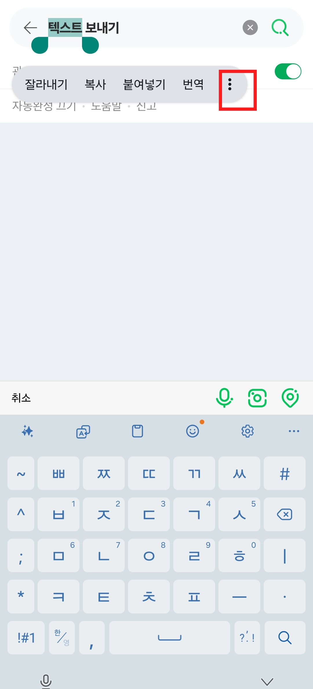
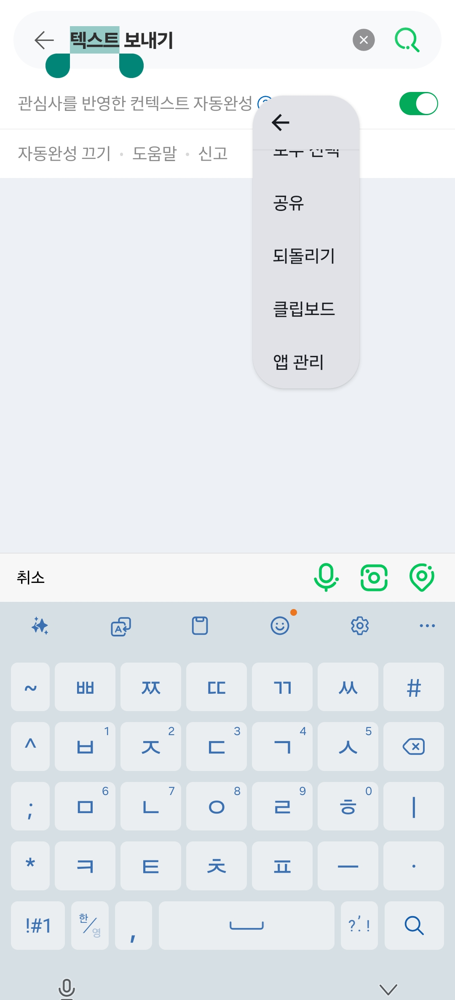
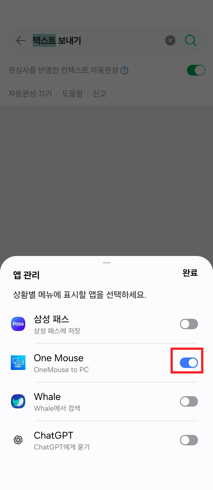
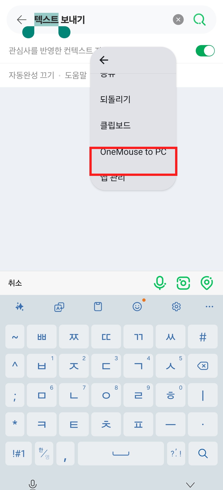
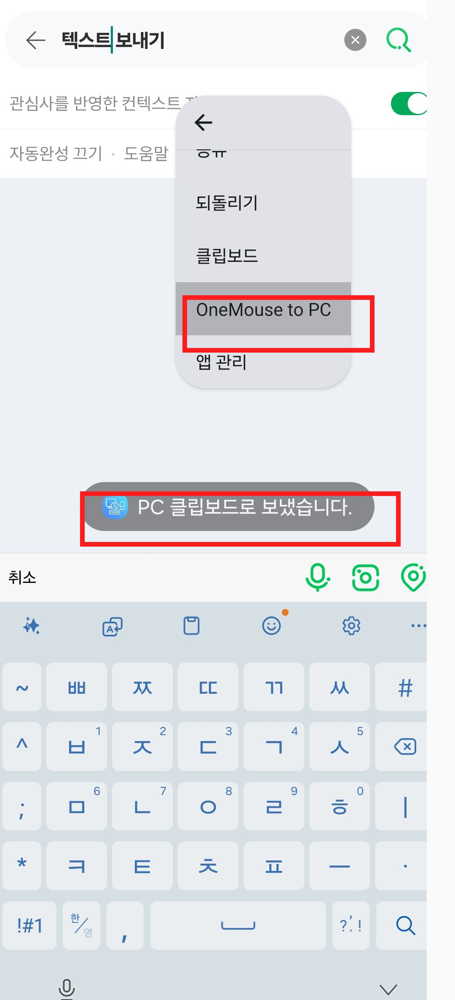

使用指南
从首次连接到常用功能，按顺序来。
连接由 Windows 端发起并管理。Android、另一台 Windows PC 与 macOS 13+ Apple 芯片 Mac 均可作为连接目标；Mac 的当前公开支持使用 LAN。
5 分钟连接
首次连接只要照着这个顺序做就行。
以下是 Android 的首次连接流程，以 Wi-Fi（同一台 Wi-Fi 路由器）为准。Mac 请使用下方独立的 LAN 连接步骤。
打开 PC 应用
在 Windows 上运行 OneMouse，屏幕上会显示 6 位数字代码和二维码。
打开 Android 无障碍服务
要接收 PC 的鼠标和键盘输入，需要在 Android 上打开 OneMouse 无障碍服务。
搜索 PC
在同一 Wi-Fi（同一台 Wi-Fi 路由器）下查找 PC。Android 13 及以上系统此时可能会询问一次“附近 Wi-Fi 设备”权限。
用二维码或 6 位代码配对
扫描二维码或输入 6 位代码，确认是自己的设备。完成配对后，输入、文件、剪贴板通道才会开启。
对准手机位置
按实际方向布置手机会从 PC 屏幕的哪个边缘（左、右、上、下）延伸出去。这个边缘就是光标的进入方向。
移过去使用
将鼠标移过布局中对应的边缘，即可用 PC 鼠标和键盘操作手机。
查看实际 UI 配对流程准备 → 确认 PC 代码 → 输入数字 → 扫描二维码
远程控制
从设备管理打开远程画面。
在设备管理中，点击已配对 Android 那一行的远程控制图标，就会打开一个显示手机画面的独立窗口。首次打开时需要授权 Android 屏幕捕获。
Android 窗口中的操作
- 左键点击、拖动、滚轮会被原样传递。
- 右键 = 返回，滚轮点击 = 主屏。
- PC 键盘（含中文）会输入到手机当前的输入框。
- 如果画面看起来是空的，请确认捕获授权弹窗，并把远程控制关掉再打开。
Windows 远程窗口支持按住右键拖动
在设备管理中点击远程控制图标，或使用默认的 Ctrl+Alt+Shift+1~9 打开窗口。 按住右键拖动可使用目标 PC 浏览器已配置的手势扩展，与 Android 自带手势不同。
设备行与图标
已打开的远程控制窗口
Android鼠标手势
按住右键绘制，快速完成操作。
查看启用方法、7种手势及支持范围。
1. 启用手势
在设置 → 输入 · 剪贴板中启用鼠标手势并选择应用（默认关闭）。PC和Android都需要支持手势的版本。
选择所有应用可在应用和主屏幕使用手势。 查看支持范围
2. 按住、绘制、松开
将PC光标移到Android手机或平板，打开已选应用。
- 在页面内容上按住鼠标右键。
- 按显示的方向顺序绘制，在红色轨迹旁确认操作。
- 松开后执行操作；绘制时页面不会滚动。
箭头和竖向量条表示方向及绘制长度对应的滚动强度，而非页面位置或精确移动距离。
| 手势 | 操作 |
|---|---|
| ← | 返回向左绘制以返回上一页或上一个界面。 |
| → | 前进向右绘制，恢复返回前的页面。 |
| ↑ | 向上滚动向上绘制并松开；笔画越长滚动越多，越短滚动越少。 |
| ↓ | 向下滚动向下绘制并松开；笔画越长滚动越多，越短滚动越少。 |
| ↓ → | 最小化应用返回主屏幕，但不关闭正在使用的应用。 |
| ↑ ↓ | 刷新在支持此功能的浏览器中刷新当前页面。 |
| ↑ → | 最近应用打开最近应用列表，选择另一个应用。 |
文件与剪贴板
文件可通过传输界面、快速拖放区或电脑间边界拖动来发送。
- 把文件放到传输界面或屏幕上的小拖放区，就会发送到选定的 Android、Windows PC 或 Mac。
- Windows PC 之间或 Windows 与 Mac 的 LAN 连接可拖着文件越过布置好的屏幕边界，放到目标设备上即可传输（目标需已连接并完成布局）。
- 从 Android 发送到 PC
- 如果无法开始，请检查连接状态和所选的设备。
快速拖放区
- 用 Ctrl+Alt+D 隐藏或显示拖放区。
- 位置和状态会保存在 PC 应用中。
快速拖放区界面
手机 → PC
把手机中选好的文件和文本发送到 PC。
通过 LAN 发送时，请先在移动应用的首页选择默认 PC，并确认已配对、连接。 文件可从传输标签或 Android 分享菜单发送；文本可从选择菜单中的 OneMouse to PC 发送。
发送文件
- 在移动应用的传输标签中，点击选择文件并发送到 PC。
- 选择要发送的文件后，会发送到当前选中的 PC。
- 在照片或文档应用中，也可以点击分享并选择 OneMouse。
发送文本
- 在 Android 中长按并选择文本，然后打开更多。
- 点击OneMouse to PC，文本会发送到 PC 剪贴板。
- 若第一次没有显示，请先在应用管理中启用一次 OneMouse，再重新选择。
查看文本发送界面在 Android 选择菜单中启用并使用 OneMouse to PC 的步骤。





通知与回复
在 PC 上查看手机通知，并回复支持的通知。
接收通知与查看历史记录
在 Android 应用中启用向 PC 发送通知，允许通知访问权限，并选择要发送通知 的应用。在主电脑的设置 → 通知中启用设备通知显示。
同一界面可查看通知历史和保留设置。 通知设置详情
回复实时通知
PC 和 Android 均支持回复，且手机原始通知提供自由文本回复时，才显示回复。 输入后点击发送或按Ctrl+Enter，由手机原应用发送（Enter换行）。
Bluetooth
没有 Wi-Fi 路由器，也能用 Bluetooth 连接。
Windows 可通过 Bluetooth 与 Android 或另一台 Windows PC 交换输入、剪贴板和文件。
这些情况很好用
- 没有共享 Wi-Fi 的房间、户外、车里
- 访客 Wi-Fi 或防火墙挡住设备搜索时
- 以键盘、剪贴板为主的轻度使用
须知
- 大文件和移动端远程画面建议使用 Wi-Fi 或 LAN。
- Mac 蓝牙为测试版（在应用设置中开启，默认关闭）。官方支持为 LAN，Mac 屏幕和窗口共享仅支持 LAN。
连接步骤
在 Android 设置标签页开启 Bluetooth 模式
在 Windows Bluetooth 设置中配对一次手机
PC 应用自动连接 → 在设备管理中显示
和 Wi-Fi 一样使用输入、剪贴板、文件
Bluetooth 从设备界面
另一台 PC
另一台 Windows PC 按设置 · 设备管理 · 布局的顺序接入。
建立连接
- 进行控制的 PC 设为主，被控制的 PC 设为从角色。
- 配对从 PC 并添加到设备管理。
- 在布局编辑器中按实际位置摆放从 PC。
- 朝那个方向移过鼠标就能控制另一台 PC，文件也可通过边界拖动来互传。
布局界面
Mac 连接目标 · 公开支持
从 Windows 选择 Mac，再输入 Mac 上显示的 6 位代码。
在 Apple 芯片 Mac 上安装公开 DMG，再从 Windows OneMouse 发起并管理 LAN 连接。按以下 5 步完成设置。
在 Windows 和 Mac 上打开公开版 OneMouse
让 Windows 端与 macOS 13+ Apple 芯片 Mac 连接到同一个本地网络，并在两端运行 OneMouse。
在 Mac 上允许必要权限
“辅助功能”是接收 Windows 鼠标和键盘输入所必需的。macOS 15+ 还需允许“本地网络”；macOS 13/14 可能不会显示该项目。
在 Windows 上选择找到的 Mac
连接由 Windows 端发起并管理；请在 Windows OneMouse 的设备管理中从发现列表选择这台 Mac。
在 Windows 输入 Mac 显示的 6 位代码
查看 Mac OneMouse 窗口中的 6 位配对代码，并把该代码输入 Windows。配对完成后，Mac 会作为连接目标出现在设备管理中。
布置位置并开始使用
在 Windows 的布局编辑器中把 Mac 放到实际方向，随后把鼠标移过对应边缘。只有要在 Windows 查看 Mac 屏幕或窗口时，才需要在 Mac 额外允许“屏幕录制”。
权限
Android 与 Mac 所需的权限不同。
Android 输入需要无障碍服务，Mac 输入需要“辅助功能”。 查看 Android 或 Mac 的远程画面还需要单独批准屏幕捕获或录制。
键盘快捷键及适用条件。
以下 PC 快捷键是默认值。可在 PC 设置 → 快捷键中更改组合、单独关闭某项或关闭全部快捷键。如果更改过，请使用已保存的组合。
Windows 应用默认快捷键
| 默认快捷键 | 操作与条件 |
|---|---|
| Ctrl+Alt+1~9 | 主电脑：连接列表中对应设备的输入控制。再次按当前正在控制设备的同一编号，解除该设备的输入控制。 |
| Ctrl+Alt+Shift+1~9 | 主电脑：打开对应设备的远程窗口，或将已打开的窗口置于前台。再次按下不会关闭窗口。 与连接快捷键使用相同的 LAN 设备编号；Bluetooth 设备不参与编号。 |
| Ctrl+Alt+D | 显示 / 隐藏快速拖放区。 |
| Ctrl+Alt+S | 在正在控制的 Windows PC、Mac 或 Android 屏幕上选择区域，并在主电脑接收截图。不控制其他设备时，截取本机屏幕。两端应用都需支持此功能，目标设备还需具有截图权限。 |
| Ctrl+Alt+V | 主电脑：手机验证码通知显示在 PC 上期间，复制其中的验证码。请先开启手机通知转发。 |
| Ctrl+V | 接收并粘贴在另一台 PC 上复制的共享文件。没有待接收的共享文件时，仍可使用普通粘贴。 |
| Ctrl+Alt+Backspace | 主电脑：控制其他设备时，立即将光标返回本机显示器中央。 |
直接控制 Android 时
以下是发送给 Android 的输入组合，与上方 PC 应用快捷键设置不同。文本编辑效果取决于目标应用和输入框的支持情况。
| 默认快捷键 | 操作与条件 |
|---|---|
| PrintScreen | Android 11 及以上：直接控制手机时截取手机屏幕并发送到 PC。需要无障碍权限。 |
| Alt+Shift+↑ / Alt+Shift+↓ | 提高 / 降低 Android 屏幕亮度。需要修改系统设置的权限。 |
| Alt+↑ / Alt+↓ | 提高 / 降低 Android 媒体音量。 |
| Alt+Tab / Alt+Shift+Tab | 切换最近应用 / 反向切换。松开 Alt 后进入选中的应用。 |
| Ctrl+A / Ctrl+C / Ctrl+X / Ctrl+V | 在支持的输入框中全选 / 复制 / 剪切 / 粘贴。 |
| Ctrl+Insert / Shift+Insert / Shift+Delete | 在支持的输入框中复制 / 粘贴 / 剪切。 |
| Ctrl+Z | 在支持的应用和输入框中撤销操作。 |
用 Windows 键盘控制 Mac 时
默认 Windows 快捷键映射将 Ctrl 作为 Command、Alt 作为 Option 发送。可在 Mac 应用的键盘设置中改为 Mac 原生修饰键映射。这并不表示要把上方 Windows 应用快捷键的 Ctrl 改成 Command。